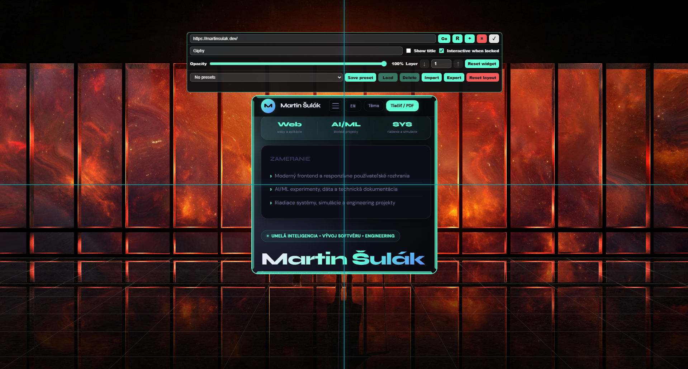
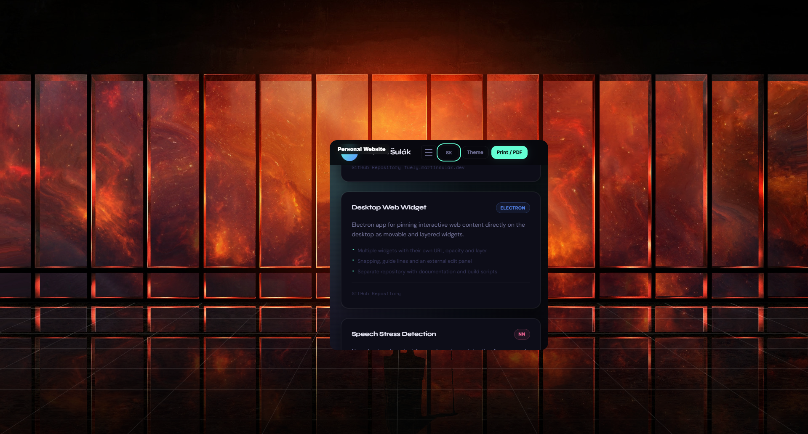

Multiple Widgets
Add separate widgets from different URLs and arrange them around your desktop.
Windows desktop productivity app
Create clean, movable widgets from dashboards, crypto prices, notes, embeds, videos, monitoring pages, and other web content you want to keep visible.

Features
Add separate widgets from different URLs and arrange them around your desktop.
Click and browse embedded pages in edit mode, then choose whether they stay interactive after locking.
Align widgets to screen edges, center lines, and other widgets with full-monitor guide lines.
Fine-tune transparency and layer order for each widget so your desktop stays usable.
Save, load, import, and export layouts for different workflows or monitor setups.
Use a floating edit panel that stays outside the widget, so content remains visible while editing.
Use cases
Desktop Web Widget works best for pages you want open all day without managing browser tabs or extra windows.
Screenshots



Workflow
Purchase through Gumroad and download the Windows installer and user manual.
Run the installer. No Node.js, npm, Electron setup, or command line work is needed.
Open the app, enter a web address, and your first desktop widget appears.
Move, resize, snap, adjust opacity, set layers, save presets, and lock the layout.
Pricing
Get the installer, portable build, and PDF user manual. Future Microsoft Store availability is planned.
FAQ
No. The Gumroad download includes a normal Windows installer. You do not need Node.js, npm, Electron, or programming knowledge.
No. Some websites block embedding for security reasons. If a page does not load, try an official embed link, a dashboard link, or another site that supports embedded display.
Yes. Widgets are clickable in edit mode. You can also choose whether each widget remains interactive after locking the layout.
No. The launch version is sold as a one-time purchase through Gumroad.
Email support is available through the contact address on the support page.
Microsoft Store release is planned. Gumroad is the current purchase option.
Buy once, install on Windows, and start pinning the pages you use every day.
Buy Desktop Web Widget